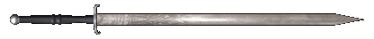
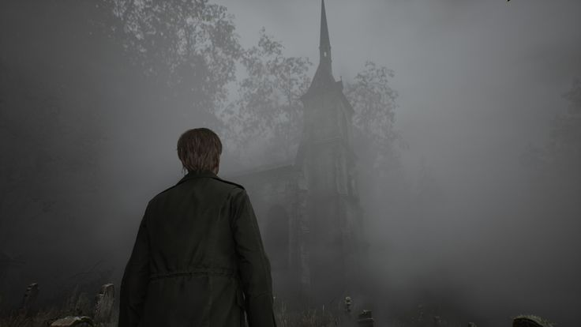
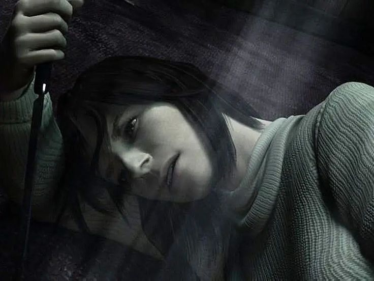
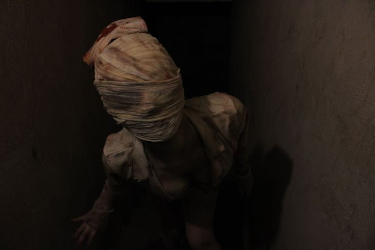
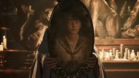
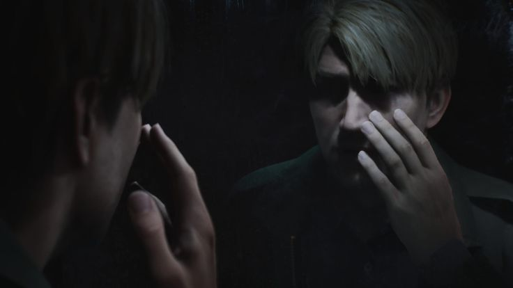

Silent Hill, en esencia, se centra en la corrupción del mundo, la humanidad y la sociedad, explorando la oscuridad y el lado malvado de la humanidad, y cómo los humanos son los verdaderos "monstruos". En Silent Hill , diversos aspectos de la humanidad se representan y manifiestan como monstruos horriblemente repugnantes y hostiles. Por ello, el terror psicológico es quizás el punto fuerte de la saga.

“Está bien... Solo fue un sueño.”
Juego creado por Team Silent y KonamiEl simbolismo es un elemento fundamental en Silent Hill , donde muchos lugares, entornos, monstruos, objetos e imágenes suelen contener un significado más profundo..







